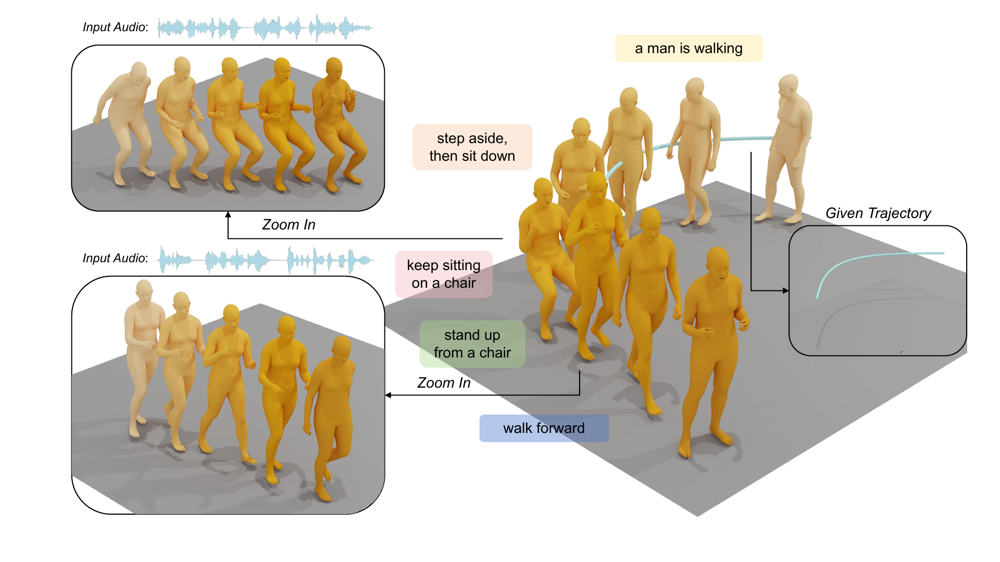
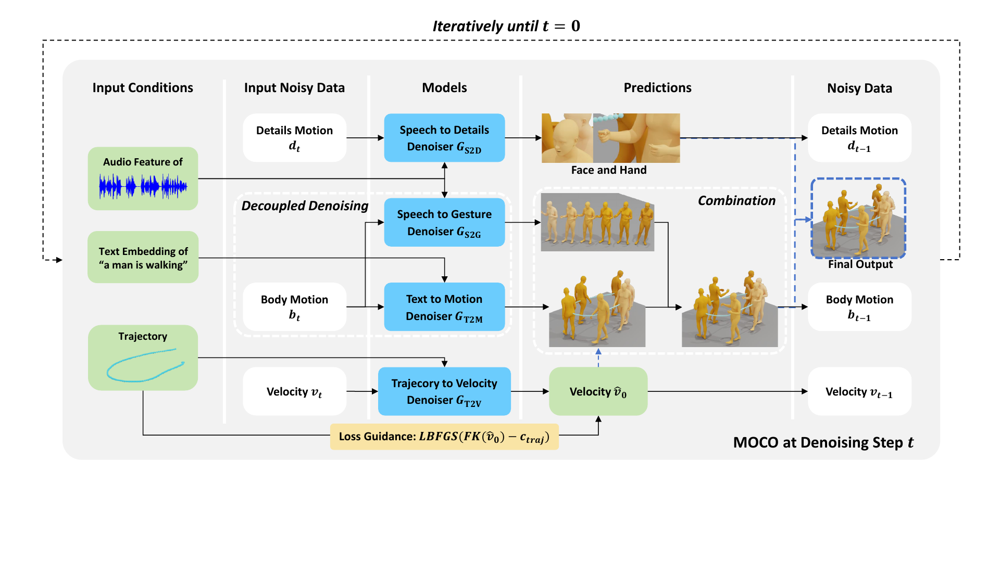
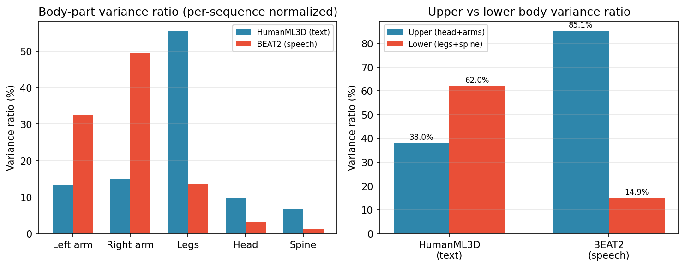
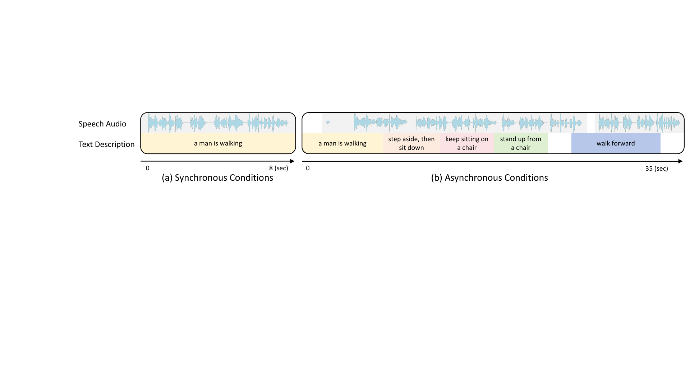
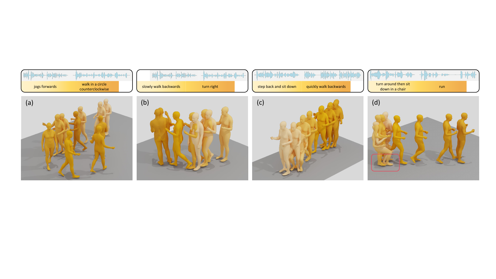

Separate the controls
Text-to-motion, speech-to-gesture, trajectory-to-velocity, and speech-to-details denoisers process their relevant signals.
ECCV 2026 · Project Page
1 South China University of Technology · 2 Joy Future Academy · 3 Peking University
Coherent 3D human motion from concurrent speech, text, and trajectory inputs.

It is natural for us to walk and talk simultaneously. MOCO tackles the challenge of generating 3D avatar motion from concurrent multi-modal inputs, including speech audio, text descriptions, and trajectory data. Instead of requiring aligned multi-modal training data, MOCO decouples the diffusion denoising process by body region. Speech audio guides upper-body gestures and facial details, while text guides lower-body actions. At every denoising step, the modality-specific predictions are assembled into a holistic motion and fed back into the next step, allowing the body parts to coordinate progressively.
Speech-driven gestures remain expressive while the lower body follows text and trajectories.
Four denoisers specialize by input modality and motion component.

Text-to-motion, speech-to-gesture, trajectory-to-velocity, and speech-to-details denoisers process their relevant signals.
A body mask assigns lower-body motion to text and upper-body motion to speech, while the current holistic state keeps the parts coordinated.
An LLM turns complex action descriptions and speech intervals into a motion timeline with timing and body-part assignments.
Under the task-scoped text conditions, locomotion and posture descriptions concentrate motion in the lower body. BEAT2 speech-gesture sequences concentrate motion in the head and arms. These distributions motivate MOCO’s interpretable spatial decomposition.


MOCO predicts pelvis velocity from a target trajectory and applies L-BFGS loss guidance during generation. This lets the avatar follow a specified path while speech controls expressive upper-body motion.
40 lower-body text descriptions · 694 speech clips · 8 speakers
Each clip combines two text descriptions with two neighboring speech segments. The benchmark is designed to test compositional consistency under concurrent conditions, rather than broad open-ended semantic coverage.
Best values are bolded within each metric direction.
| Method | Text2Motion | Speech2Gesture | |||||
|---|---|---|---|---|---|---|---|
| FID+ ↓ | R1 ↑ | M2T ↑ | M2M ↑ | FID-A ↓ | BC ↑ | L1div ↑ | |
| Weighted Sum | 1.335 | 6.8 | 0.546 | 0.537 | 2.17 | 2.20 | 4.08 |
| Pseudo-Text | 1.593 | 2.2 | 0.511 | 0.503 | 2.22 | 2.55 | 6.43 |
| SynTalker | 0.985 | 9.8 | 0.601 | 0.603 | 6.60 | 2.95 | 9.12 |
| MOCO (Ours) | 0.862 | 24.6 | 0.649 | 0.639 | 3.83 | 2.72 | 8.62 |

10 participants · 60 pairwise comparisons
Complex descriptions become a timed sequence of elementary motions.
Timeline rules can give a text command temporary control of the arms.
Additional speech examples from an unseen dataset.
MOCO’s default body-part assignment can be suboptimal when text and speech request overlapping upper-body actions. The timeline interface provides a practical override, while adaptive body-part assignment remains an important direction for future work. The benchmark focuses on controlled compositional consistency and does not claim arbitrary text-audio generalization.
This work was supported by the National Natural Science Foundation of China under Grants 62476099 and 62076101, Guangdong Basic and Applied Basic Research Foundation under Grants 2024B1515020082 and 2023A1515010007, and the TCL Young Scholars Program.
@inproceedings{liu2026moco,
title = {Multi-Modal Controlled Coherent Motion Generation},
author = {Liu, Yifei and Cao, Qiong and Yi, Hongwei and Jiang, Huaiguang and Ding, Changxing},
booktitle = {European Conference on Computer Vision (ECCV)},
year = {2026}
}